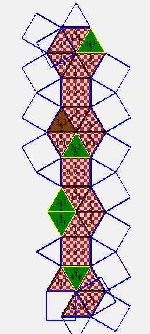

BAES Akira, Computer Science MA1
Rolling a Tesselation Polyhedron in its Tiling Net [unfinished]
This work is focused around regular-faced polyhedrons for which some nets are mosaics or tiling patterns.
Such polyhedrons are called Tessellation Polyhedra with Regular Polygonal Faces and are the following:
(From "Determination of all Tessellation Polyhedra with Regular Polygonal Faces")
- Tetrahedron
- Cube
- Octahedron
- Isocahedron
- Hexagonal antiprism
- Square pyramid (j1)
- Elongated square pyramid (j8)
- Gyroelongated square pyramid (j10)
- Triangular dipyramid (j12)
- Pentagonal dipyramid (j13)
- Elongated triangular dipyramid (j14)
- Elongated square dipyramid (j15)
- Elongated pentagonal dipyramid (j16)
- Gyroelongated square dipyramid (j17)
- Augmented triangular prism (j49)
- Biaugmented triangular prism (j50)
- Triaugmented triangular prism (j51)
- Snub disphenoid (j84)
- Sphenocorona (j86)
- Augmented sphenocorona (j87)
- Sphenomegacorona (j88)
- Hebesphenomegacorona (j89)
- Disphenocingulum (j90)
The goal of this project is double:
1) Rewrite the code provided by my teacher which was used to determine if a Polyhedron had a tileable net, to produce all tileable nets of one Tesselation Polyhedron.
Note: at this point of the project, I was unable to fullfill point 1.
2) Determine if the given tiling can be "rolled" into in order to "roll" on the whole plane, by rolling the Polyhedron into its faces on its nets.
In order to do 1) I simplified the set of the nets stiching I was looking for. When testing, all tesselation found so far have been symmetrical with each tile identical, meaning that they
-Contain translations and rotations, but no reflexion/mirroring
-Can be defined by the description of a single tile's neighbours, which are then repeated to create the pattern.
If every tesselation possible with the given shapes can be represented by this model is still an open question. (This model cannot represent central symmetry, or non-periodic patterns)
A Regular-Faced Polyhedron can be represented as a dictionary of faces and their adjacent faces:
J1R = { #order is clockwise
0: [1,2,3,4],
1: [0,4,2],
2: [1,3,0],
3: [0,2,4],
4: [0,3,1]
}
Based on this, I represent a tile's pattern as:
J1N = { #order is clockwise
0: [1,0-p,3,0+p],
1: [0,2+p,2],
2: [1,4+2*p,1-p],
3: [0,4-p,4],
4: [3+p,3,2-2*p]
}

Internal neighbours are the number of the adjacent face on the net. External neighbours are differenciated by adding a multiple of p being the number of sides of the polyhedron to the neighbour's number. The multiple is used to show which adjacent shape is touching, in case the same shape is several times a neighbour.
In case a shape is its own neighbour, the inverted sign of this represent which side is linked.
This information is enough to create the tile pattern as we just have to match the faces calling eachother by the sides that they call eachother trough.
By limiting to tile pattern that fit this representation, it would also simplify the research of tile patterns.
The original code extended a tile pattern randomly by stitching a tile to a random side and checking for collisions on the touching sides adjacent to the stitched side.
Each time we extend the pattern on one edge, we can also extend it on its symmetrical edge (unless the two shapes are touching on the exact same edge), reducing sensibly the research space.
We also reduce the tiling test requirement at until the starting shape's sides are entirely covered, as any additional tile would be symmetrical and redundant.
[TODO] Unfortunately I haven't been able to make the provided code output my own format of tile representations yet
Once we have possible tilings, I run them trough my visualisation script to verify that they are legitimate tile patterns and if it fills the space.
The visualisation simply starts from one edge (one segment), and draws clockwise the next shape.
Only one of the manipulated polyhedrons contains a different shape than a triangle or a square (Hexagonal antiprism contains an hexagon).

To verify if the shape can be "rolled" into, we need to run trough:
Each net face to polyhedron face configuration in each orientation possible, symmetries included.
A branch ends if
-The face to polyhedron with the given orientation was already visited
-The polyhedron cannot roll into the given direction
We keep in memory where the re-visit happenned and visualise it to check if the polyhedron can fill the space, or if it only fills a band of space.
[Hard to see in current version, must change the idea]

Deliverables: rolltiles.zip
Contents:
shapesdraw.py, which only does part 2 (visualisation of a tile configuration)
The decision if a tile configuration is rollable or not is hard to see with the current representation, so the goal of the project is not attained.
The search of tile configurations is not in a useable state and is not included.